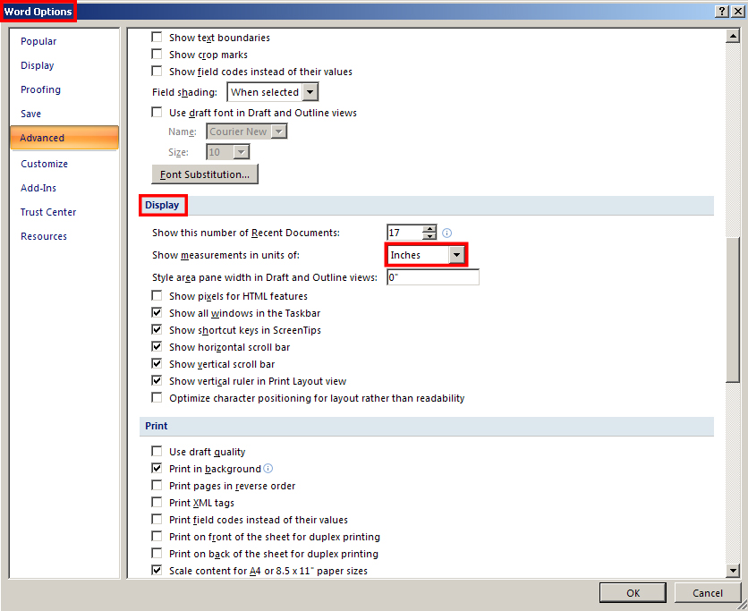
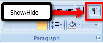

To change your document measurement from centimeters to inches (metric to imperial), click the Office button and choose Word Options, Advanced, Display.

Microsoft product screen shot(s) reprinted with permission from Microsoft Corporation.
When you start a new document, it is important to set up the page according to your preferences or the demands of the document type. For example, a letter will look much different from a full-colour newsletter. Go to the Instructional Videos and watch “Settings in a New Document” to learn how to set up a new document.
Use the Document Properties feature in Microsoft® Word® 2007 to organize and identify your work. The Document Properties feature stores important data about a document, such as its title and author or keywords that identify its subject or content. This kind of data is called metadata, which essentially means data about data.
Go to the Instructional Videos and watch “Document Properties” to learn how to set standard document properties, or metadata, for your documents.
Go to the Instructional Videos and watch “Using Document Properties” to learn how to view document properties as you open a file.
Microsoft® Word® offers many ways to access software commands and features. Learning keyboard shortcut keys—such as Ctrl + S for Save and Ctrl + P for Print—will speed up production and improve ergonomics by reducing your hands’ movements from keyboard to mouse. You can find keyboard shortcuts in the ScreenTip that appears as you hover over command buttons. Make it a habit to take note of keyboard shortcuts and use them whenever you can.
Another way to quickly access software commands is by using the right mouse button. In Microsoft® Word® 2007, when you select text and click the right mouse button (“right-click”), a menu of formatting commands appears.
Some commonly used commands that you can access by right-clicking the mouse are Cut, Copy, and Paste. Go to the Instructional Videos and watch “Copy and Paste” to see how the mouse is used to copy and paste text and to learn how the clipboard stores items for pasting.

Microsoft product screen shot(s) reprinted with permission from Microsoft Corporation.
For easier editing and review, you can view a document's hidden formatting codes. Go to the Instructional Videos and watch “The Show/Hide Tool” to see how the Show/Hide button reveals non-printing paragraph marks and other hidden formatting symbols. In Training Room 5: Reports, you will learn how to use the Reveal Formatting command to see even more detailed source code.